La Créature du Marais, surnommée « Cul-Pointu », de son vrai nom Tancrède Charon, est un artiste underground normand basé en sa capitale : Rouen.
Son univers met en scène une « post-France » en ruines, hantée par la perte du sacré, l'isolement et la sensation d'effondrement culturel. Rouen y devient une ville mentale et symbolique : cité gothique, marécage spirituel, refuge brumeux d'un poète errant entre désir de pureté et fascination pour la chute.
Influencé par Baudelaire, Rabelais, Villon, Huysmans, Verlaine ou Céline, Tancrède mêle romantisme noir, catholicisme mystique, poésie médiévale et culture internet dans une écriture où le sublime côtoie constamment l'ordurier. Son œuvre explore la culpabilité, la solitude, l'amour obsessionnel, le péché, la honte et le besoin impossible de rédemption. Les figures féminines y apparaissent comme des muses idéalisées puis détruites par le désir, tandis que la religion devient à la fois refuge, obsession et combat intérieur. Derrière la provocation, l'humour noir et l'outrance volontaire se dessine surtout le portrait d'une bête hantée par la peur de la damnation, la nostalgie d'un absolu inaccessible et le sentiment de se repentir trop tard dans un monde vidé d'espoir.
DISCOGRAPHIE
- 2025Jubilé (single)
- 2024Confiteor (34 titres, environ 2 h)
- 2023Omerta434 : Chyren
- 2022Omerta434
- 2021Les Machines Infernales
CONFITEOR · CUL-POINTU · 11 SEPTEMBRE 2024
- Aimant et mal-aimé
- La côte Sainte-Catherine
- Mourir sans mourir
- Lugubre Beauté
- Solution Finale
- Nabuchodonosor
- Caverne
- La Tentation Incarnée
- In Morte Sumus
- Gravats d'Hier
- Le Caveau des Artistes
- O Salutaris Hostia
- L'Excommunié
- Oasis
- Lubricité
- Le Monstre
- Licencieuserie Interdite pour Cause de Racisme Assumé
- Le Soleil disparaît
- Le Proscrit des Cent Vedettes
- Oraison
- La Nausée de Tout
- La Nuit du 15 octobre
- La Régente de mes Soucis
- Ora pro me ad Dominum Deum nostrum
- Charia Blanche
- Domine, salvam fac Galliam
- Ego te Glorifico
- Qu'on m'accorde mon Ève
- Le Signe
- Dis, ferme un instant les yeux
- Le sot valet de cœur
- Panégyrique de l'Inconscience
- Chimaera Rothomagensis
- La Chute
SPOTIFYBANDCAMPAPPLE MUSICARCHIVES SOUNDCLOUD
POCHETTES

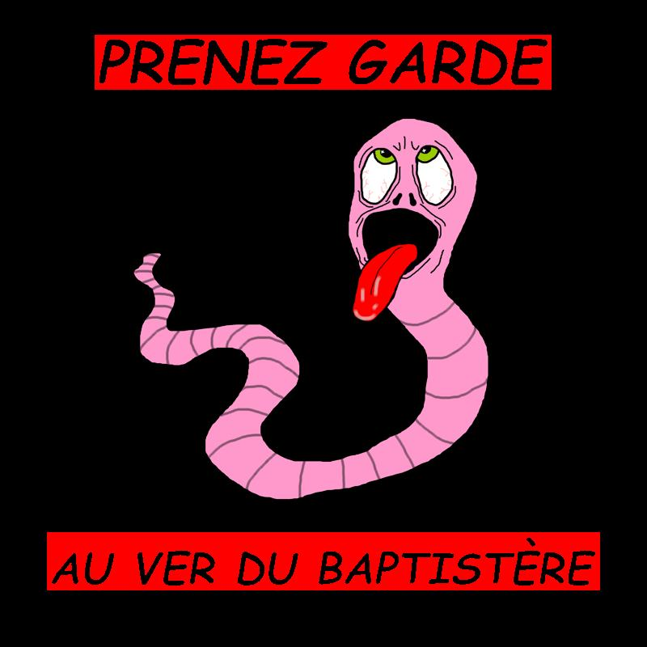
CLIPS
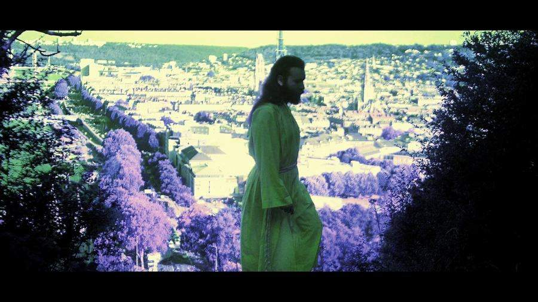
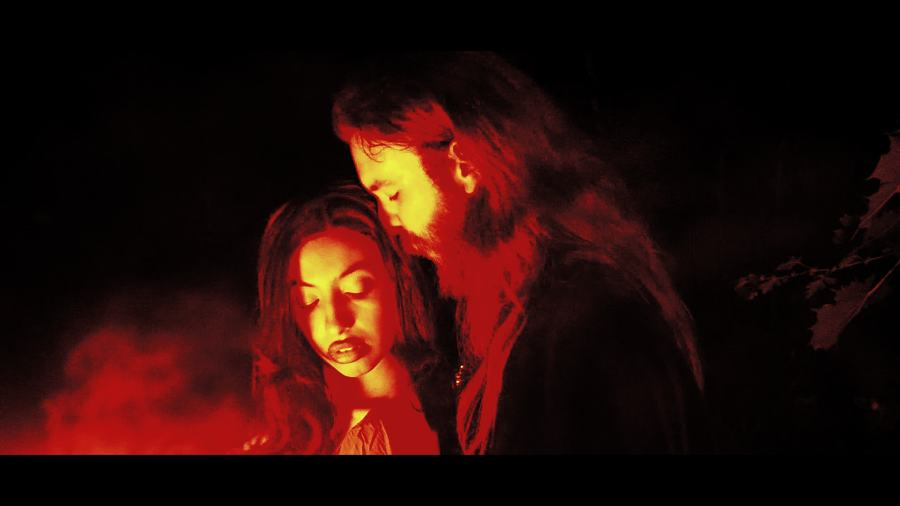
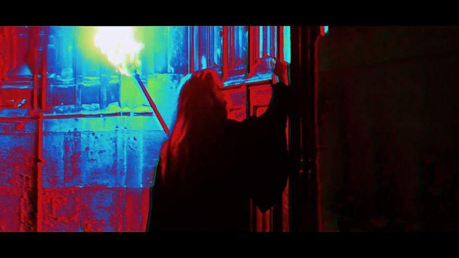
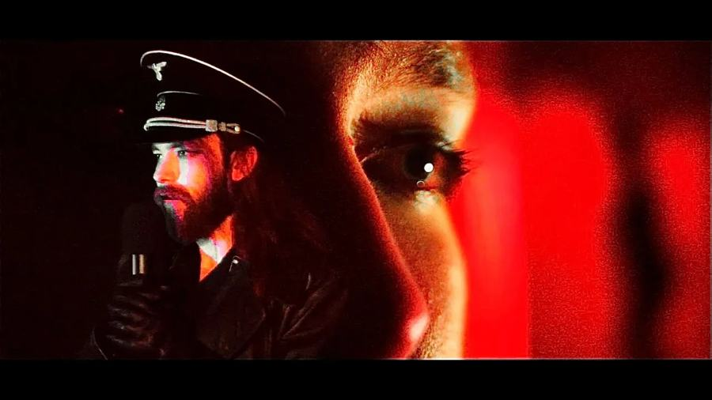
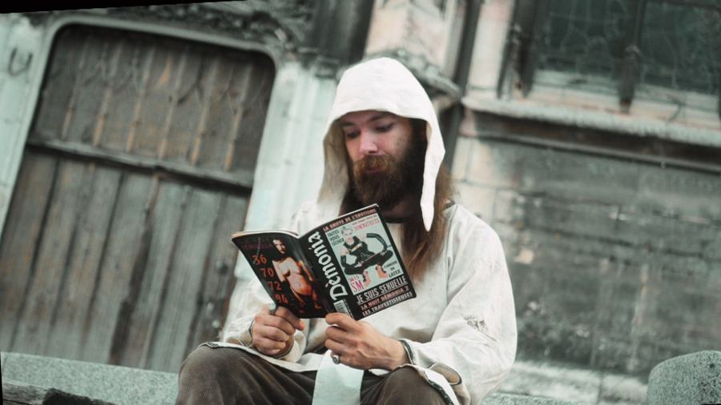
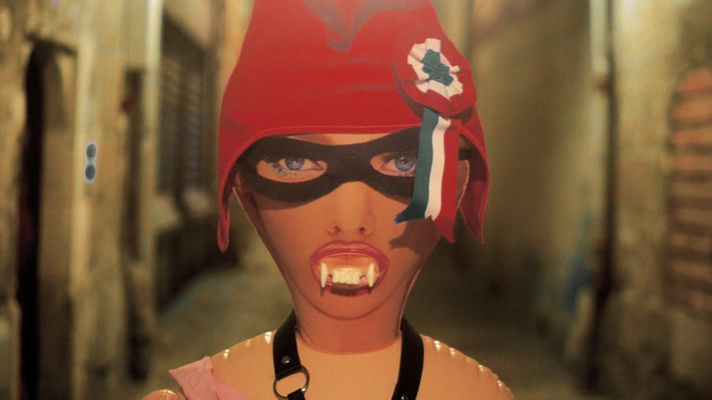
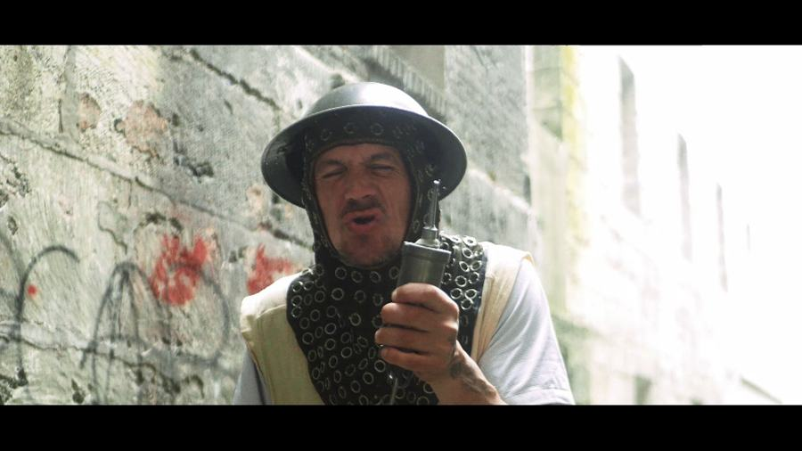
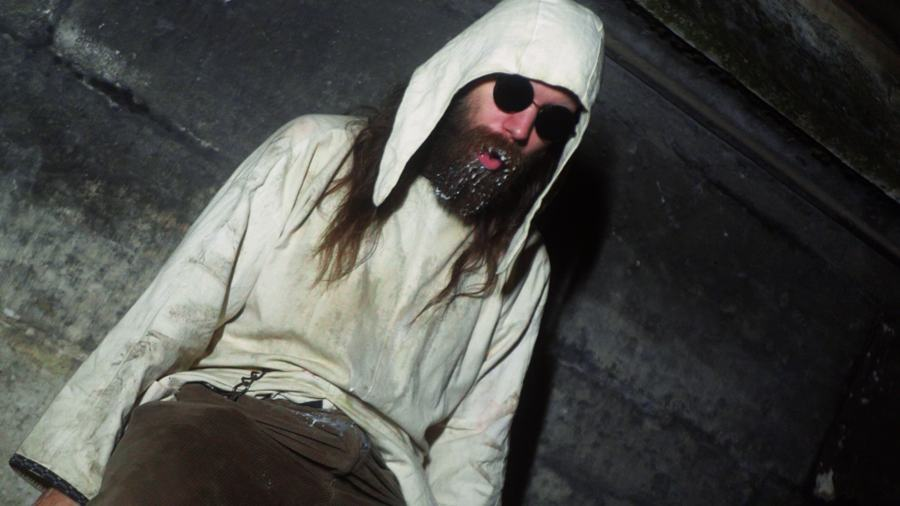
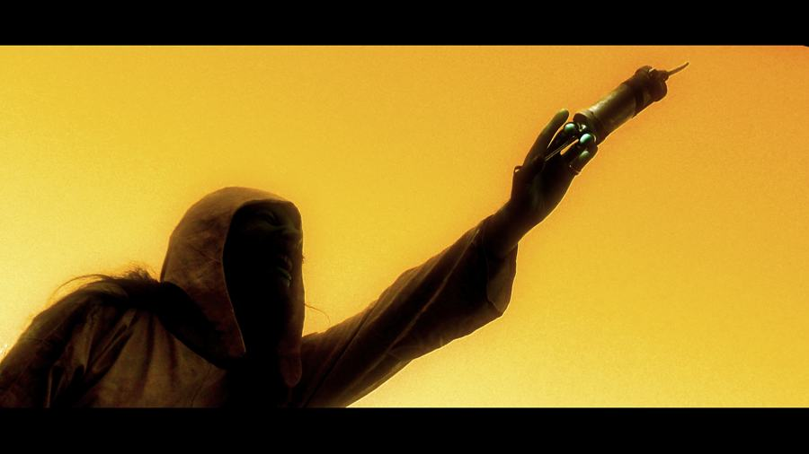
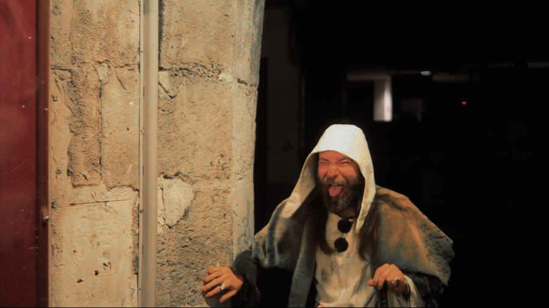
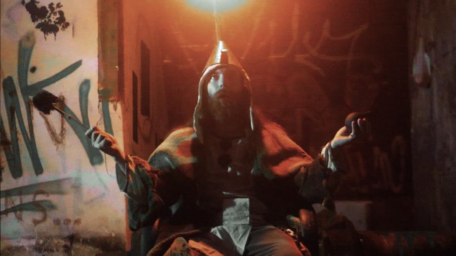
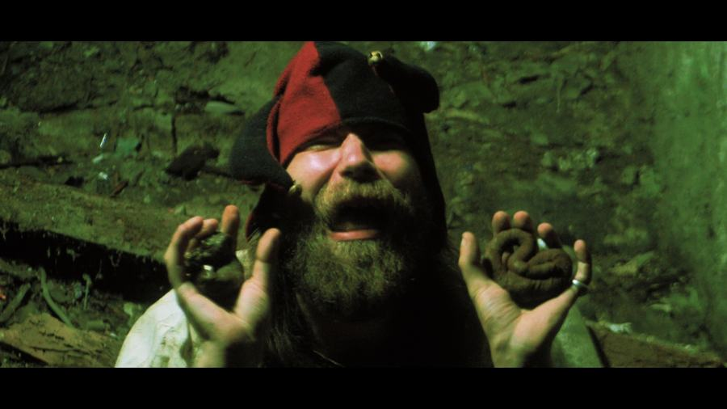
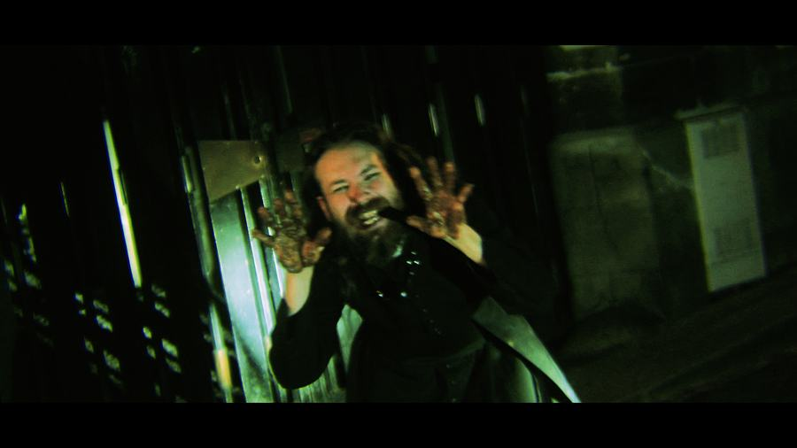
CONTACT
Suivre, écouter, écrire.
MERCH
Prochainement.